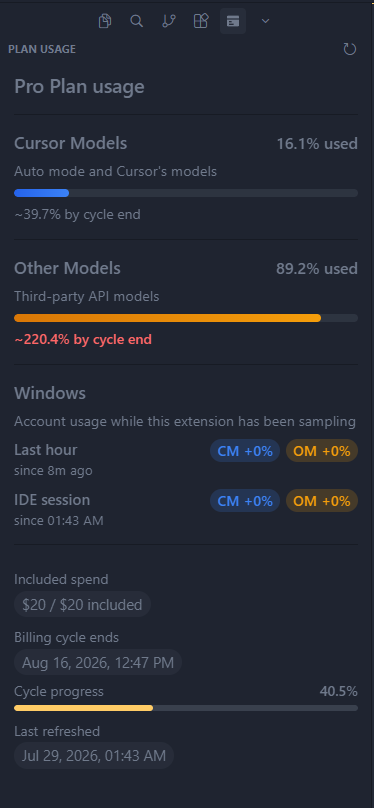
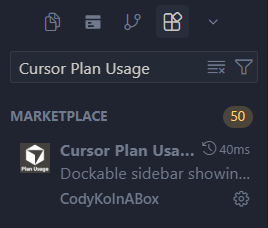

Cursor Plan Usage
See your Cursor plan usage without leaving the editor.
Live Cursor Models and Other Models percentages in a dockable sidebar and status bar chip — so you always know where you stand in the billing cycle.

What you get
Everything you need to track plan burn without leaving Cursor.
- Sidebar panel CM / OM usage at a glance in the activity bar
-
Status bar chip
Always-visible
CM n% · OM n%— or Usage so far deltas - Billing cycle Progress through the period, end time, and a simple projection
- Session deltas Last-hour and IDE-session usage while the extension is sampling
- Usage so far Resettable window that persists across reloads; auto-resets on a new billing cycle
- Smart refresh Updates on focus and AI activity; pauses when Cursor is unfocused
Install in Cursor
Extensions tab → search → install. That’s it.

- Open Extensions
- Search Cursor Plan Usage
- Install
Also on Open VSX.
Open source
MIT licensed and fully readable on GitHub. Audit it, fork it, or send a pull request.
Privacy
Your access token stays in your machine. No telemetry. No third-party API calls.
Lightweight
Built to stay out of your way. Smart refresh pauses when Cursor is unfocused and avoids unnecessary background work.
Native to Cursor
Lives in the sidebar and status bar, using Cursor’s existing UI instead of opening another dashboard.